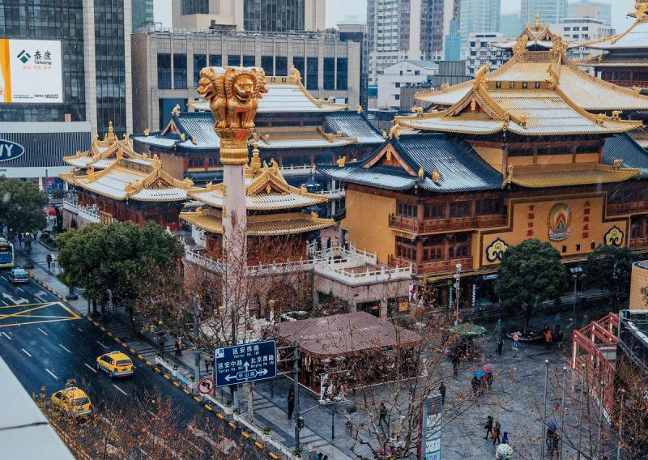
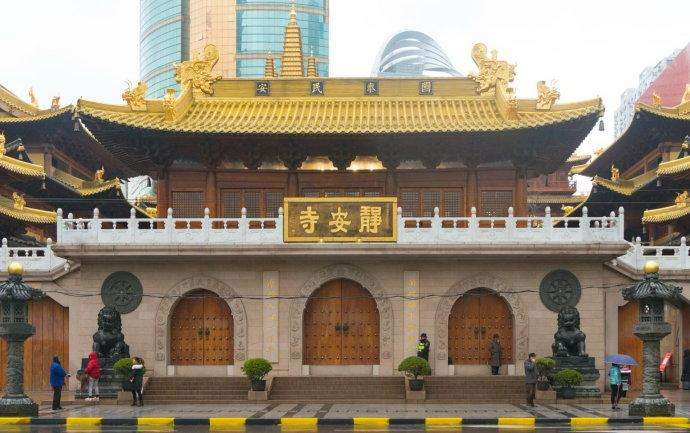

静安寺，位于上海市静安区，其历史相传最早可追溯至三国孙吴赤乌十年（247年），初名沪渎重玄寺。宋大中祥符元年（1008年），更名静安寺。南宋嘉定九年（1216年），寺从吴淞江畔迁入境内芦浦沸井浜边（今南京西路），早于上海建城。静安寺总建筑面积达2.2万平方米，整个庙宇形成前寺后塔的格局，由大雄宝殿、天王殿、三圣殿三座主要建筑构成，是上海最古老的佛寺。寺内藏有八大山人名画、文征明真迹《琵琶行》行草长卷。静安区亦由静安寺而闻名于世。静安寺的建筑风格是仿明代以前的建筑风格，典型的代表就是斗拱的形制。
정안사는 상해시 정안구에 자리잡고있는데 전하는데 의하면 제일 먼저 3 국 손오적오 10년 (247년)까지 거슬렀으며 최초의 이름은 호손중현사라고 한다.송대 중상 원년 (1008년)에 정안사로 이름을 고쳤다.남송 가정 9년 (1216년), 사는 오송강반으로부터 경내 로포 비정방변 (오늘의 남경 서로)으로 이전하였는데 송강은 상해보다 먼저 수성하였다.총 연면적이 2만 2000m2에 이르는 정안사는 전장과 후탑 구조를 이루며 대웅보전, 천왕전, 삼성전 등 3개의 주요 건물로 구성된 상하이에서 가장 오래된 사찰이다.이 사원에는 8대 산인의 명화, 문헌, 명유의 진적인 「 비파행 」의 행초가 길게 뻗어 있다.정안구는 정안사로 유명하다.정안사의 건축풍격은 명조이전의 건축풍격을 모방한것으로서 전형적인 대표적특징으로 두공의 형상과 구조가 있다.

